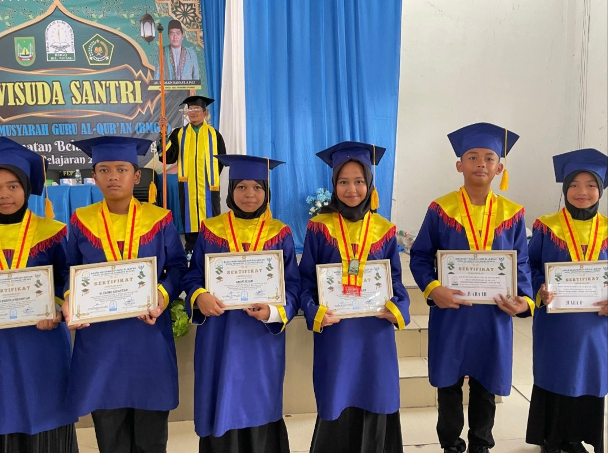
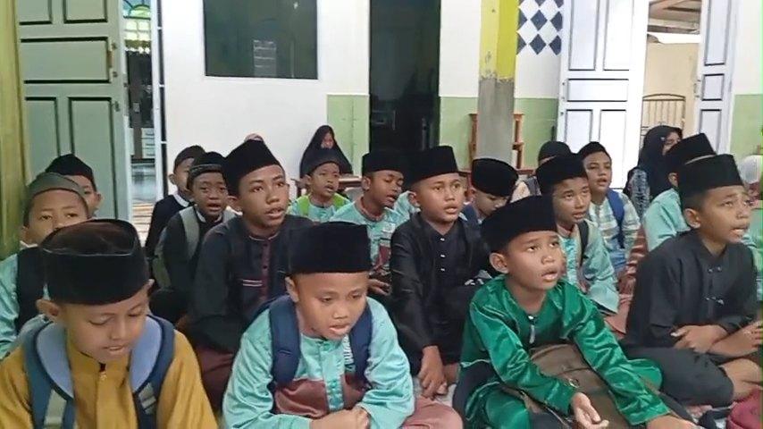
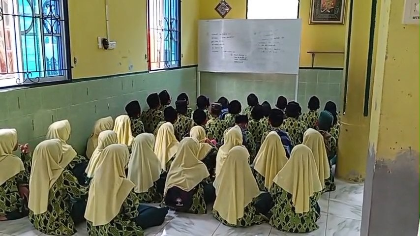
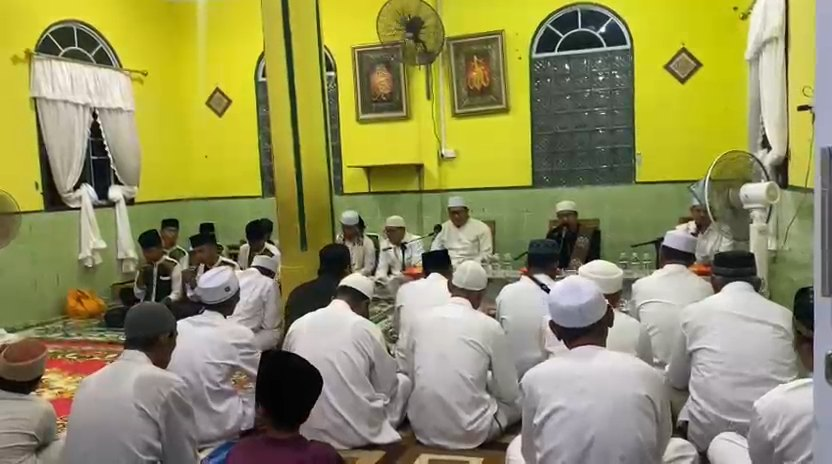
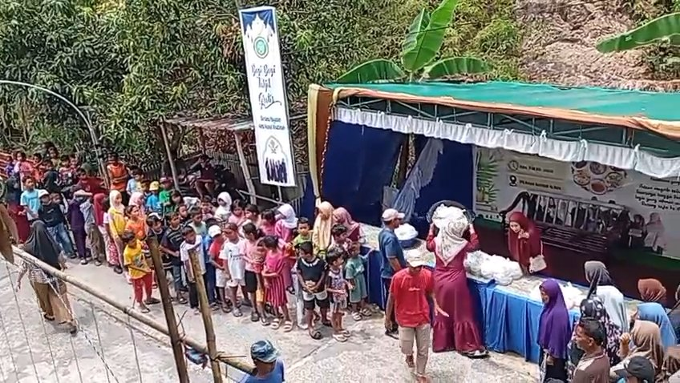
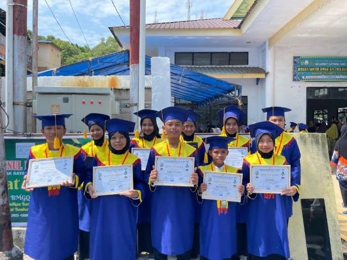
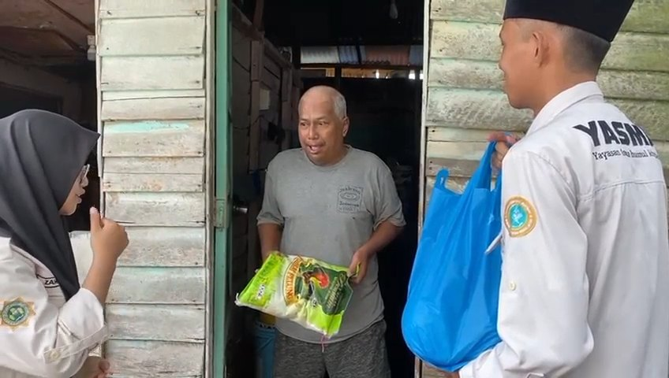

Puluhan santri menuntaskan munaqasyah Al-Qur'an dengan predikat memuaskan, beberapa di antaranya meraih juara.
Yayasan pendidikan & sosial Islam
Mendidik anak pulau mencintai Al-Qur'an.
Yayasan Asma Husnul Khatimah (YASMA) menaungi TPQ Husnul Khatimah, Majelis Sholawatan Al Madani, serta kegiatan berbagi sembako dan takjil di Kampung Baru, Belakang Padang — Pulau Penawar Rindu, Kota Batam.
105santri TPQ
2005tahun berdiri
3bidang kegiatan


خَيْرُكُمْ مَنْ تَعَلَّمَ الْقُرْآنَ وَعَلَّمَهُ
“Sebaik-baik kalian adalah orang yang belajar Al-Qur'an dan mengajarkannya.”
HR. BukhariTentang YASMA
Berdiri sejak 2005, dari Kampung Baru untuk anak-anak pulau.
YASMA didirikan pada tahun 2005 oleh almarhum Bapak Musa bin Abdul Rahman dan Ibu Asiah di Kampung Baru, Belakang Padang. Kini TPQ Husnul Khatimah membimbing 105 santri membaca Al-Qur'an dengan bacaan tartil berstandar Badan Musyawarah Guru Al-Qur'an (BMGQ).
Dari situ tumbuh Majelis Sholawatan Al Madani, serta kegiatan sosial berbagi sembako dan takjil untuk warga.
VisiSejarah, misi, dan pengurusTerwujudnya generasi muslim yang Qur'ani, berilmu, berakhlakul karimah, mandiri, serta bermanfaat bagi agama dan masyarakat di Kepulauan Riau.
Program
Tiga kegiatan yayasan
Dari kelas Iqro' anak-anak, sholawat bersama jamaah, sampai berbagi untuk warga, semuanya dijalankan dari Kampung Baru, Belakang Padang.
Detail tiap program-
TPQ Husnul Khatimah
Belajar membaca Al-Qur'an dari Iqro' sampai tartil, mengikuti kurikulum berstandar BMGQ dan ditutup dengan munaqasyah serta wisuda.

-
Majelis Sholawatan Al Madani
Majelis sholawat bulanan: jamaah dan warga Belakang Padang berkumpul membaca Maulid Simtudduror dan bersholawat kepada Nabi Muhammad SAW.

-
Kegiatan Sosial
Berbagi paket sembako untuk warga yang membutuhkan, dan takjil untuk berbuka puasa di bulan Ramadhan.


Prestasi santri
Wisuda Santri BMGQ Kecamatan Belakang Padang
Santri TPQ Husnul Khatimah menuntaskan munaqasyah Al-Qur'an dan menerima sertifikat kelulusan. Beberapa di antaranya pulang membawa predikat juara.
Santri berprestasi
- M. Fahri Alfattah
- Aisur Rizqi
- Masyitah Fitri
Keseharian
Suasana kegiatan yayasan
Kabar
Kabar terbaru dari yayasan

Infaq & sedekah
Infaq Anda menjadi biaya mengaji, sembako, dan takjil.
Infaq dipakai untuk kegiatan belajar di TPQ Husnul Khatimah, paket sembako bagi warga yang membutuhkan, dan takjil berbuka puasa di bulan Ramadhan. Setiap penerimaan dicatat oleh bendahara yayasan.
“…seperti sebutir biji yang menumbuhkan tujuh tangkai, pada setiap tangkai ada seratus biji.” QS. Al-Baqarah: 261
Rekening resmi yayasan
Segera diumumkan
Nomor rekening resmi sedang disiapkan. Untuk sementara, hubungi pengurus yayasan melalui WhatsApp untuk menyalurkan infaq.
Kunjungi kami
Sekretariat di Kampung Baru
Silakan datang untuk bersilaturahmi, mendaftarkan anak, atau menyerahkan infaq secara langsung.
- Alamat
- Kampung Baru, Kec. Belakang Padang, Kota Batam, Kepulauan Riau 29411
- +62 823-8718-8593
- Jam layanan
- Senin–Sabtu, 08.00–17.00 WIB